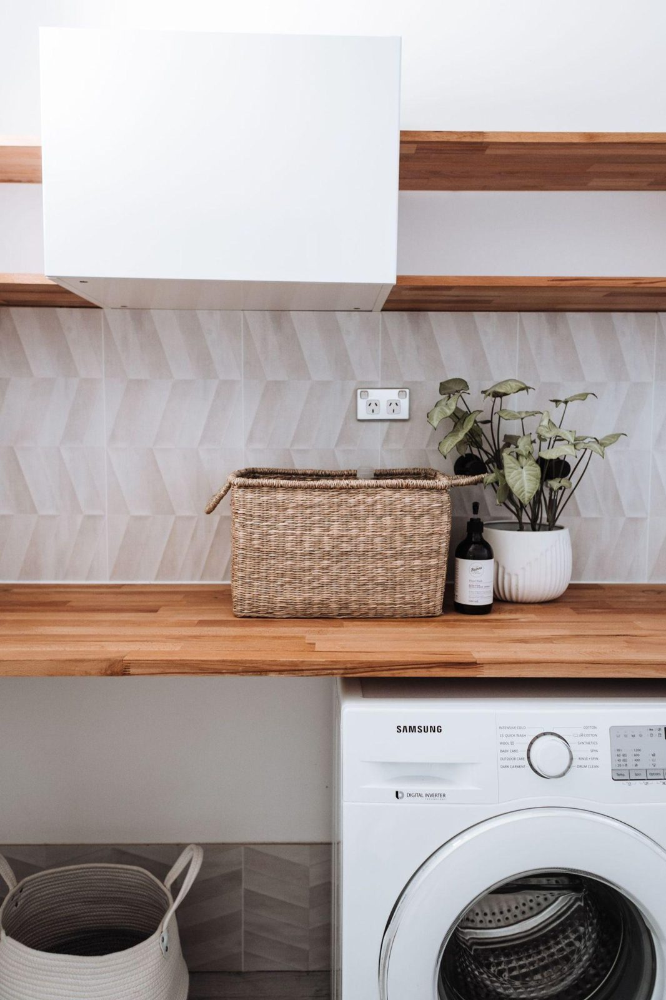

Consumer durables accounted for approximately one fifth of the assets held by the bottom half of US households by wealth in the second quarter of 2026. The category includes goods such as cars, furniture and appliances, which the Federal Reserve records separately from homes, deposits and shares.
Felix Nikolas Prehn, economist, tech founder and former investment banker, examines the composition of household assets in The Hidden Regressive Tax. The paper was published by The Prehn Institute in September 2026.
A Share of Assets and a Share of Ownership
Consumer durables accounted for $2.17 trillion of the bottom half’s $10.27 trillion in total assets. That amounts to approximately 21 per cent of the group’s assets.
The Federal Reserve’s Distributional Financial Accounts provide a second comparison. They show that the bottom half held 23.8 per cent of the value of all consumer durables recorded for US households in the same quarter.
The two percentages describe different relationships. One shows how much of the group’s own assets consisted of consumer durables. The other shows the group’s share of the national total for that category.
The figures measure the recorded value of goods, including cars, furniture and appliances, across each wealth group. The category combines those goods into a single total.
Consumer Durables and Other Holdings
Real estate was the largest asset category on the bottom half’s balance sheet, at $4.82 trillion. Consumer durables were second. Deposits accounted for $0.78 trillion, defined contribution pension entitlements for $0.76 trillion and defined benefit pension entitlements for $0.49 trillion.
Corporate shares and mutual funds accounted for $0.37 trillion of the group’s assets. The bottom half held 0.6 per cent of the national total for that category, compared with its 23.8 per cent share of consumer durables. Its share of deposits was 5.5 per cent.
The categories capture different types of value. Consumer durables are recorded at current cost, with depreciation recognised over time. The S&P 500 and house-price figures in the research track changes in market prices.
Ownership Across Wealth Groups
In the second quarter of 2026, the middle 40 per cent of households by wealth held 42.4 per cent of the national value of consumer durables. The next 9 per cent held 21 per cent, and the top 1 per cent held 12.7 per cent.
The bottom half’s share was 19.2 per cent in the third quarter of 1989 and 22.8 per cent at the end of 2000. It reached 25.0 per cent in the third quarter of 2007 and stood at 23.4 per cent at the end of 2019.
The households within each wealth group can change over time. Each quarterly figure therefore represents the share held by the households in that wealth range at the date measured.
Assets and Liabilities
The bottom half had $5.99 trillion in liabilities in the second quarter of 2026, including $3.16 trillion in home mortgages and $2.64 trillion in consumer credit. Its liabilities amounted to approximately 58 per cent of its assets.
Consumer credit includes borrowing for vehicles as well as credit cards, education and other purposes. It is a broader category than debt used to acquire consumer durables.
Real estate and consumer durables together made up about two-thirds of the bottom half’s assets in the second quarter of 2026. The full paper, The Hidden Regressive Tax, sets out the household balance-sheet figures alongside its analysis of monetary expansion and asset prices.